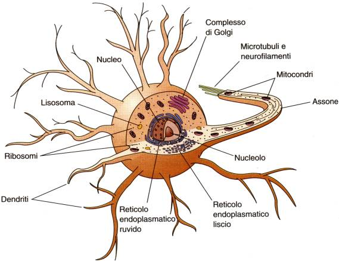

Introduction
This web-page has been created for Computer Graphic's examination.
For this project I chose to draw a neuron.
I took inspiration from the image you can find here on the left, or in the gallery section.
In addition to the neuron itself I have also drawn the majority of cellular organelles including the mitochondria, lysosomes, ribosomes etc..
In the next sections you will find the description of the neuron together with the organelles
 A mitochondrion (plural mitochondria) is a membrane-enclosed organelle found in most eukaryotic cells. These organelles range from 0.5 to 1.0 micrometer in diameter. Mitochondria are sometimes described as "cellular power plants" because they generate most of the cell's supply of adenosine triphosphate (ATP), used as a source of chemical energy. In addition to supplying cellular energy, mitochondria are involved in a range of other processes, such as signaling, cellular differentiation, cell death, as well as the control of the cell cycle and cell growth. Mitochondria have been implicated in several human diseases, including mitochondrial disorders and cardiac dysfunction, and may play a role in the aging process.
A mitochondrion (plural mitochondria) is a membrane-enclosed organelle found in most eukaryotic cells. These organelles range from 0.5 to 1.0 micrometer in diameter. Mitochondria are sometimes described as "cellular power plants" because they generate most of the cell's supply of adenosine triphosphate (ATP), used as a source of chemical energy. In addition to supplying cellular energy, mitochondria are involved in a range of other processes, such as signaling, cellular differentiation, cell death, as well as the control of the cell cycle and cell growth. Mitochondria have been implicated in several human diseases, including mitochondrial disorders and cardiac dysfunction, and may play a role in the aging process. Every article or image is taken from wikipedia (en).
Every article or image is taken from wikipedia (en).